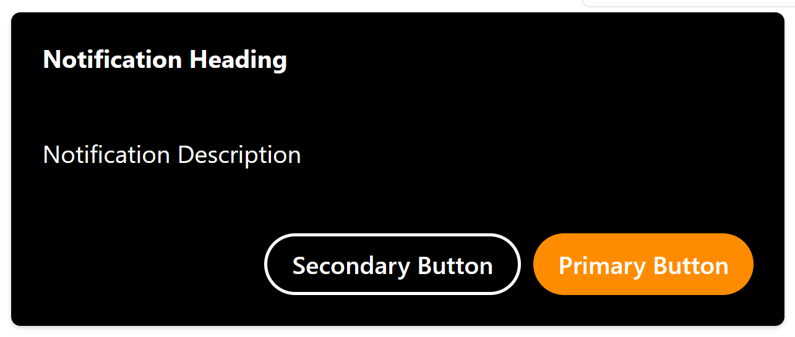
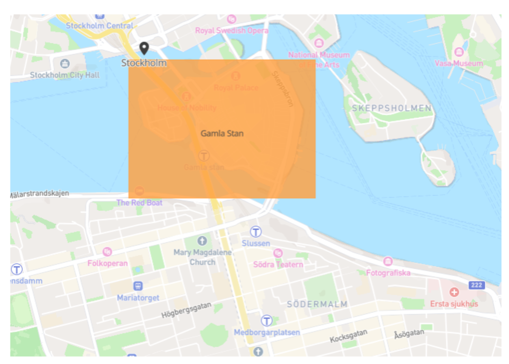

Development environment¶
Two options are made available to you when developing and testing your certified app within the Evam platform.
The first one is the in-browser development environment, it runs fully within your web browser and offers a simple reproduction of the Vehicle Services platform. Since this runs fully within your web browser, you can leverage all the existing development tools React supports including debugging. This is well-suited for active development of your application.
The second one is an in-device development environment. This is a great tool when your app is close to completion and you wish to try it in a realistic environment and perform demos of your app within the Evam platform. It offers more limited support for development tools.
In-browser¶
The Evam SDK Development Environment in-browser is a React component intended to assist you in testing your Certified App. The Development Environment can be thought of as a ‘Vehicle Services’ emulator that runs in the Web with limited functionality. This notably includes support for testing Notifications and Map APIs.
It requires your app to be built using React. Other setups may work but are not officially supported.
Installation¶
Import directly from the Evam SDK package.
import {VehicleServicesDevelopmentEnvironment} from "@evam-life/sdk";
Usage¶
Note
This is not necessary if you use the Evam React template, see Getting started.
Simply wrap your app with the VehicleServicesDevelopmentEnvironment component.
<VehicleServicesDevelopmentEnvironment>
<App/>
</VehicleServicesDevelopmentEnvironment>
Side Note¶
The VehicleServicesDevelopmentEnvironment component will detect whether it is running in Vehicle Services and will render appropriately. This means it will still render your app inside Vehicle Services but none of the Development Environment components will render to the DOM. Events will also propagate without being consumed by the Developer Environment. This way you need not worry about removing the component for production.
Features¶
Notifications
The Development Environment simulates Vehicle Services’ notifications. The EvamApi provides a method sendNotification for displaying notifications in Vehicle Services. The Development Environment will intercept these notifications and display notifications with capability of being cancelled and triggering callbacks.

const evamApi = new EvamApi();
const notification = Notification.fromJSON({
heading: "Notification Heading",
description: "Notification Description",
notificationType: NotificationType.ACTION_HUN,
primaryButton: {
label: "Primary Button",
callback: () => {
console.log('Primary Button clicked on test notification');
}
},
secondaryButton: {
label: "Secondary Button",
callback: () => {
console.log('Secondary Button clicked on test notification');
}
}
});
evamApi.sendNotification(notification);
Map
Minimum version
Make sure you use the Evam SDK version 2.4.1 or above to use this feature.
Preview
This is currently available as a preview API, which means it cannot be used in a production deployment yet.
The Development Environment provides a basic Map to allow you to preview the effects of calling some APIs such as EvamApi.setNavLayerPoint(...).
This Map will appear if its feature flag is set:
<VehicleServicesDevelopmentEnvironment showFullDeviceView={true}>
<App/>
</VehicleServicesDevelopmentEnvironment>
You may then add objects to the map:
const evamApi = new EvamApi();
evamApi.setNavLayerPoint("layer-point-stockholm", [
{
text: "Stockholm",
// Image from your 'public' folder
// Note that all points in the same layer must have the same icon
icon: "location-icon.png",
point: {
latitude: 59.32782768407381,
longitude: 18.061689825305674
}
}
])
evamApi.setNavLayerShape("layer-shape-gamla-stan", [
{
text: "Gamla Stan",
color: "#ff8000",
points: [
{
latitude: 59.327684,
longitude: 18.060225
},
{
latitude: 59.327684,
longitude: 18.077854
},
{
latitude: 59.321029,
longitude: 18.077854
},
{
latitude: 59.321029,
longitude: 18.060225
},
{
latitude: 59.327684,
longitude: 18.060225
}
]
}
]);
Which will yield:

In-Device¶
Note
An Evam development device is required. You can purchase one through your Evam sales representative or by sending a mail to support@evam.life.
The Evam SDK Development Environment in-device is a set of tools installed in your Evam development device that enables you to test the Evam platform functionality as well as develop your application in a smooth way.
Here are the tools made available to you:
The Evam device running Vehicle Services - you should have received a login you can use to access the platform;
A slot for a sideloaded app in Vehicle Services - this will allow you to run your certified app for demo and testing purposes;
The Evam Demo Tool, a testing web-app that allows you to inject Operations and simulate the location of your device.
Evam Demo Tool¶
The Evam Demo Tool allows you to simulate events in Vehicle Services for demo and testing purposes.
This includes:
sending new operations and updates to Vehicle Services, simulating sendings by the dispatch;
changing the location of the vehicle in Vehicle Services, simulating GPS updates as-if the vehicle was moving.
Those events are grouped in several “Demos” that are made available to you with test data. Following them would allow you simulate the lifecycle of an Operation in Vehicle Services, based on the demo type.
The available demos include:
Fire department Sweden,
Ambulance Sweden.
Additionally, you can send your own events using the “Developer zone”.